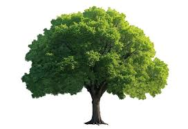
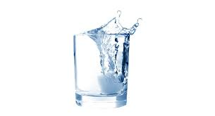

1. Árbol: Planta de gran tamaño con tronco leñoso y ramas
2. Avión: Aeronave que se utiliza para el transporte aéreo de personas o mercancías
3. Agua: Sustancia líquida, incolora, inodora e insípida que forma los ríos, lagos y mares
4. Amigo: Persona con la que se tiene una relación de afecto, confianza y camaradería

5. Animal: Ser vivo que se caracteriza por su capacidad de movimiento y sensibilidad